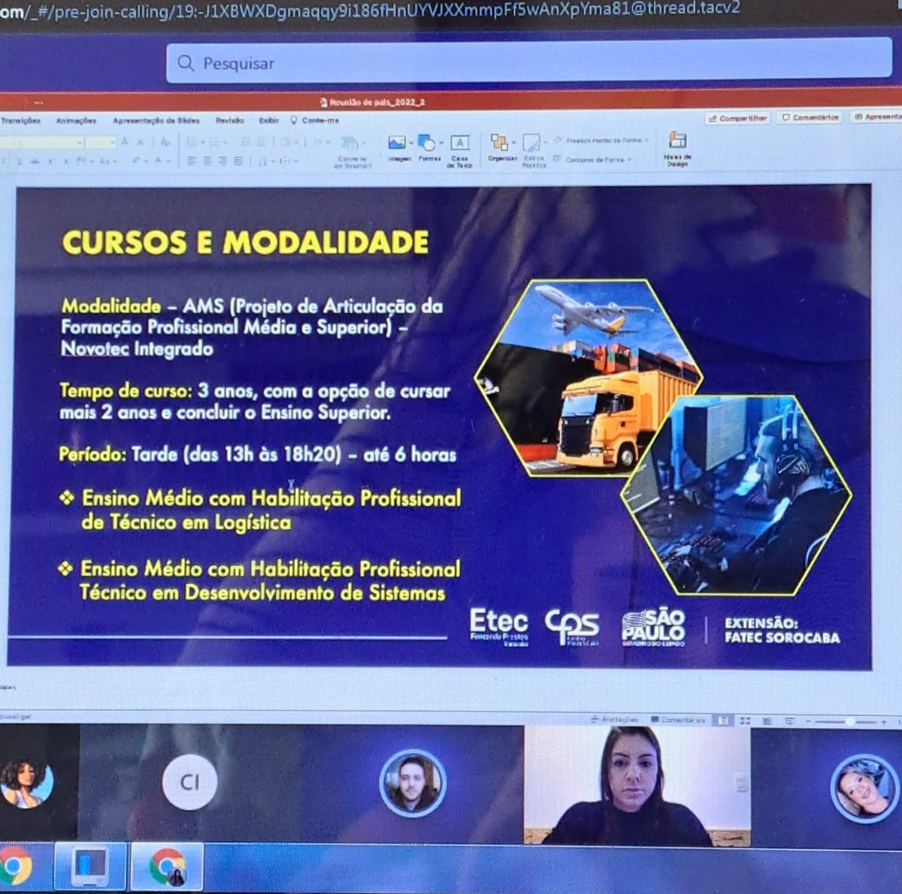
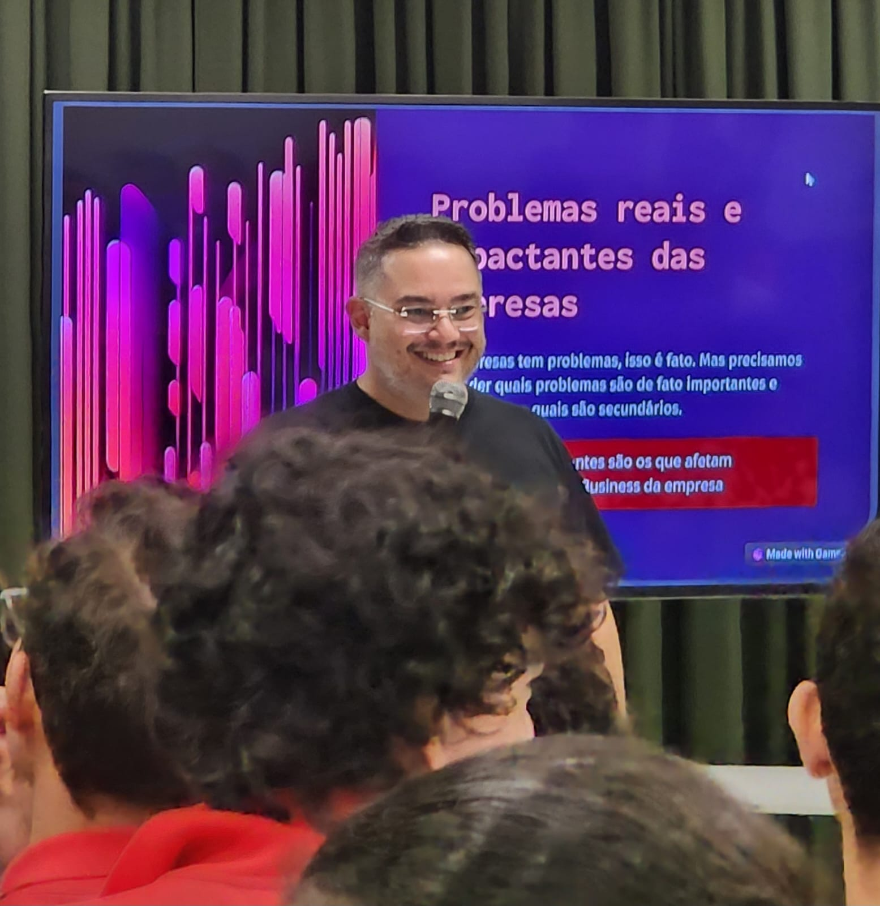
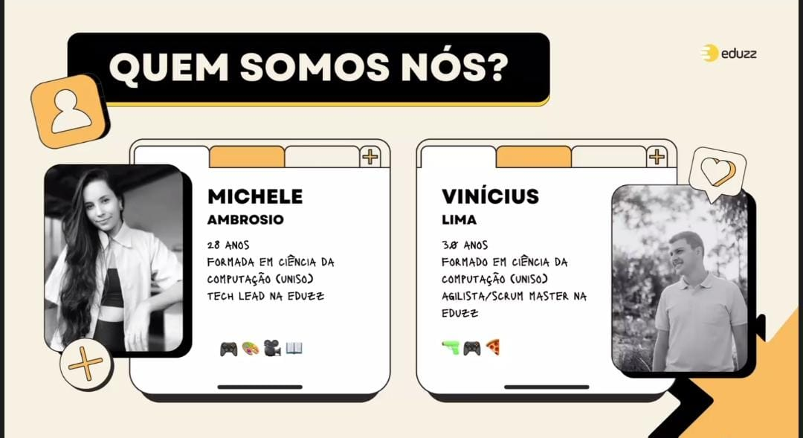
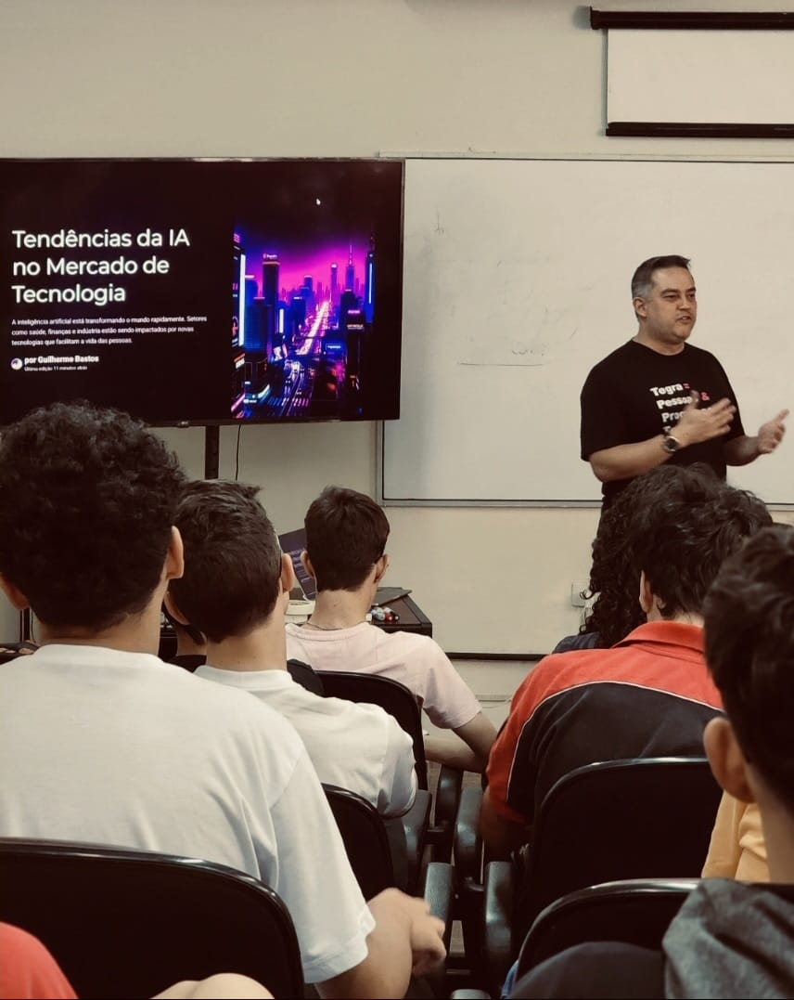

Portifólio-Ptech
1ºAno
1- No dia 25 de março de 2022, ocorreu uma reunião com as representantes das empresas Eduzz e Uno. Durante este encontro, foi apresentado o cronograma anual da Ptech, delineando as dinâmicas e atividades planejadas ao longo do ano para a nossa turma.
2- No dia 19 de abril de 2022, foi realizada uma reunião com as representantes das empresas Eduzz, Uno e Tegra para discutir o tema da "Conduta Ética". Durante o encontro, tivemos a oportunidade de compartilhar nossas perspectivas e visões sobre o assunto, promovendo uma discussão construtiva sobre a importância da ética empresarial e os valores que orientam nossas práticas e decisões.
3- No dia 13 de maio de 2022, ocorreu um encontro com as representantes das empresas Eduzz e Uno. Durante este evento, foram distribuídos os brindes referentes a uma reunião anterior, infelizmente não documentada, na qual os cinco melhores alunos da atividade foram contemplados com um brinde de cada empresa.
4- Em 30 de setembro de 2022, foi realizada uma reunião envolvendo as empresas Eduzz, Uno e Tegra, na qual foi apresentado um tema de significativa importância: A empatia, destacando sua relevância tanto na esfera pessoal quanto na profissional.

5- Anteriormente à reunião abordada no primeiro tópico, ocorreu uma outra reunião na qual nos apresentamos às empresas. Discutimos sobre nossas experiências com tecnologia, preferências e outros assuntos pertinentes. Senti-me extremamente acolhida, confortável e entusiasmada para os próximos encontros.
2ºAno
1- No dia 27 de abril de 2023, ocorreu uma reunião com as representantes das empresas Eduzz e Uno.

2- No dia 04 de maio de 2023, uma palestra foi conduzida pelo dono da empresa Itix, abordando temas relacionados sobre à empresa.

3- No dia 05 de maio de 2023, uma palestra foi conduzida por uma representante da empresa Itix, abordando detalhadamente os temas relacionados à tecnologia e à inteligência artificial.

4-No dia 22 de setembro de 2023, realizou-se uma reunião com a representante de uma das empresas para abordar técnicas e dicas sobre como elaborar um currículo de forma eficaz.

5- No dia 16 de novembro de 2023 , tivemos um treinamento com um representante da empresa Itix, onde aplicamos o método Scrum em um projeto sobre Reciclagem. Aprendemos a trabalhar em equipe de forma mais rápida e eficiente e estamos aplicando esses conhecimentos em nossos projetos atuais.

Karina de Moraes Garcia Desenvolvimento de Sistemas Extensão Fatec
3ºAno
1- No dia 08 de abril de 2024, participamos de uma palestra com o representante da empresa Itix, cujo tema central foi "Criatividade e Inovação: Um Desafio Constante".

2- No dia 23 de maio de 2024, foi realizada uma palestra na Etec Fernando Prestes, ministrada por Guilherme Bastos, da empresa Tegra. O tema abordado foi "As possibilidades da IA no mercado de trabalho".
3- No dia 27 de maio de 2024, a Eduzz organizou uma palestra online ministrada por Victor Palencia, que abordou o tema "Liderança e Gestão 3.0".

4- No dia 18/06, tivemos um bate-papo com os estagiários da Itix, das 08h às 10h. Logo em seguida, das 10h às 12h, assistimos a uma palestra com o tema: 'Explorando Homelabs: Como criar seu próprio ambiente de desenvolvimento pode transformar sua carreira em TI', ministrada pelo palestrante Edmilson..
5- No dia 31/07, assistimos a uma palestra da empresa Eduzz com o tema: 'Hacker do bem e a segurança digital no dia-a-dia', ministrada pelo palestrante Luiz Milagres..

6- No dia 28/08, assistimos uma palestra da empresa Eduzz, com o tema: 'Você é uma pessoa organizada?', ministrada pelos palestrantes Vinicius e Michele..
7- No dia 29/08, assistimos uma palestra da empresa Uno com o tema: 'Fluxo de Operações Comercial', ministrada pelos palestrantes André Lopes e Tamiris Marciano..

8- No dia 05/09, assistimos uma palestra da empresa Tegra com o tema: 'Quais as tendências da área de TI com a virada da IA Generativa e outras tecnologias.', ministrada pelos palestrante Guilherme Bastos ..
